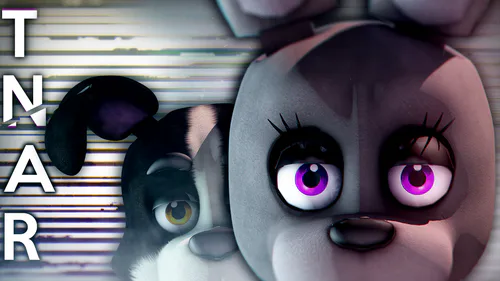

*Those Nights at Rachel's* (TNAR) é um fan game que foca na atmosfera de tensão e suspense. O jogador trabalha como vigia noturno em um restaurante onde os animatrônicos parecem estar vivos. O design é inspirado nos primeiros jogos de FNaF, mas com uma abordagem única.
Semelhante aos jogos originais de FNaF, o jogador monitora câmeras e controla portas para impedir que os animatrônicos o alcancem. TNAR oferece animações realistas e desafios únicos, como novos tipos de IA.